This report presents a comprehensive overview of our analysis pipeline, including data and feature exploration, regression and classification modeling for methylation prediction, integrated gradients-based explainability, and motif discovery (both general and kernel-specific).
Data and Feature Exploration
This section provides insights into the relationships between features and methylation score, including correlation heatmaps and feature distributions. We also show stratified views by hypermethylated (>0.5) and hypomethylated (≤0.5) groups.
Regression Performance
The table below presents performance metrics for regression models predicting continuous methylation levels. Following the table are plots illustrating regression model predictions and score distributions.
| Model | MSE | R² | Pearson Corr |
|---|---|---|---|
| CNN_Model | 0.0756 | 0.5787 | 0.7691 |
Regression Plots
Distribution of Test Methylation Scores

CNN Predictions vs Actual Methylation Scores

Interactive Version
Classification Performance
The table below presents performance metrics for classification models predicting whether samples exceed a given methylation score threshold. Following the table are ROC curves and distribution plots.
| Model | AUC | Accuracy | F1 | Precision | Recall |
|---|
Classification Plots
Explainability (Integrated Gradients)
The Integrated Gradients approach helps interpret the model's predictions by attributing contributions of each nucleotide in the sequence. Red areas indicate features that push predictions higher, and blue areas indicate features that lower predictions.
Integrated Gradients Attribution Heatmap (Sample 0)
Integrated Gradients Attribution Heatmap (Sample 1)
Integrated Gradients Attribution Heatmap (Sample 2)
Integrated Gradients Attribution Heatmap (Sample 3)
Integrated Gradients Attribution Heatmap (Sample 4)
Integrated Gradients Attribution Heatmap (Sample 5)
Integrated Gradients Attribution Heatmap (Sample 6)

Integrated Gradients Attribution Heatmap (Sample 7)

Integrated Gradients Attribution Heatmap (Sample 8)

Integrated Gradients Attribution Heatmap (Sample 9)

Integrated Gradients Attribution Heatmap (Sample 10)

Integrated Gradients Attribution Heatmap (Sample 11)

Integrated Gradients Attribution Heatmap (Sample 12)

Integrated Gradients Attribution Heatmap (Sample 13)

Integrated Gradients Attribution Heatmap (Sample 14)

Integrated Gradients Attribution Heatmap (Sample 15)

Integrated Gradients Attribution Heatmap (Sample 16)

Integrated Gradients Attribution Heatmap (Sample 17)

Integrated Gradients Attribution Heatmap (Sample 18)

Integrated Gradients Attribution Heatmap (Sample 19)

Integrated Gradients Attribution Heatmap (Sample 20)

Integrated Gradients Attribution Heatmap (Sample 21)

Integrated Gradients Attribution Heatmap (Sample 22)

Integrated Gradients Attribution Heatmap (Sample 23)

Integrated Gradients Attribution Heatmap (Sample 24)

Integrated Gradients Attribution Heatmap (Sample 25)

Integrated Gradients Attribution Heatmap (Sample 26)

Integrated Gradients Attribution Heatmap (Sample 27)

Integrated Gradients Attribution Heatmap (Sample 28)

Integrated Gradients Attribution Heatmap (Sample 29)

Integrated Gradients Attribution Heatmap (Sample 30)

Integrated Gradients Attribution Heatmap (Sample 31)

Integrated Gradients Attribution Heatmap (Sample 32)

Integrated Gradients Attribution Heatmap (Sample 33)

Integrated Gradients Attribution Heatmap (Sample 34)

Integrated Gradients Attribution Heatmap (Sample 35)

Integrated Gradients Attribution Heatmap (Sample 36)

Integrated Gradients Attribution Heatmap (Sample 37)

Integrated Gradients Attribution Heatmap (Sample 38)

Integrated Gradients Attribution Heatmap (Sample 39)

Integrated Gradients Attribution Heatmap (Sample 40)

Integrated Gradients Attribution Heatmap (Sample 41)

Integrated Gradients Attribution Heatmap (Sample 42)

Integrated Gradients Attribution Heatmap (Sample 43)

Integrated Gradients Attribution Heatmap (Sample 44)

Integrated Gradients Attribution Heatmap (Sample 45)

Integrated Gradients Attribution Heatmap (Sample 46)

Integrated Gradients Attribution Heatmap (Sample 47)

Integrated Gradients Attribution Heatmap (Sample 48)

Integrated Gradients Attribution Heatmap (Sample 49)

Integrated Gradients Attribution Heatmap (Sample 50)

Integrated Gradients Attribution Heatmap (Sample 51)

Integrated Gradients Attribution Heatmap (Sample 52)

Integrated Gradients Attribution Heatmap (Sample 53)

Integrated Gradients Attribution Heatmap (Sample 54)

Integrated Gradients Attribution Heatmap (Sample 55)

Integrated Gradients Attribution Heatmap (Sample 56)

Integrated Gradients Attribution Heatmap (Sample 57)

Integrated Gradients Attribution Heatmap (Sample 58)

Integrated Gradients Attribution Heatmap (Sample 59)

Integrated Gradients Attribution Heatmap (Sample 60)

Integrated Gradients Attribution Heatmap (Sample 61)

Integrated Gradients Attribution Heatmap (Sample 62)

Integrated Gradients Attribution Heatmap (Sample 63)

Integrated Gradients Attribution Heatmap (Sample 64)

Integrated Gradients Attribution Heatmap (Sample 65)

Integrated Gradients Attribution Heatmap (Sample 66)

Integrated Gradients Attribution Heatmap (Sample 67)

Integrated Gradients Attribution Heatmap (Sample 68)

Integrated Gradients Attribution Heatmap (Sample 69)

Integrated Gradients Attribution Heatmap (Sample 70)

Integrated Gradients Attribution Heatmap (Sample 71)

Integrated Gradients Attribution Heatmap (Sample 72)

Integrated Gradients Attribution Heatmap (Sample 73)

Integrated Gradients Attribution Heatmap (Sample 74)

Integrated Gradients Attribution Heatmap (Sample 75)

Integrated Gradients Attribution Heatmap (Sample 76)

Integrated Gradients Attribution Heatmap (Sample 77)

Integrated Gradients Attribution Heatmap (Sample 78)

Integrated Gradients Attribution Heatmap (Sample 79)

Integrated Gradients Attribution Heatmap (Sample 80)

Integrated Gradients Attribution Heatmap (Sample 81)

Integrated Gradients Attribution Heatmap (Sample 82)

Integrated Gradients Attribution Heatmap (Sample 83)

Integrated Gradients Attribution Heatmap (Sample 84)

Integrated Gradients Attribution Heatmap (Sample 85)

Integrated Gradients Attribution Heatmap (Sample 86)

Integrated Gradients Attribution Heatmap (Sample 87)

Integrated Gradients Attribution Heatmap (Sample 88)

Integrated Gradients Attribution Heatmap (Sample 89)

Integrated Gradients Attribution Heatmap (Sample 90)

Integrated Gradients Attribution Heatmap (Sample 91)

Integrated Gradients Attribution Heatmap (Sample 92)

Integrated Gradients Attribution Heatmap (Sample 93)

Integrated Gradients Attribution Heatmap (Sample 94)

Integrated Gradients Attribution Heatmap (Sample 95)

Integrated Gradients Attribution Heatmap (Sample 96)

Integrated Gradients Attribution Heatmap (Sample 97)

Integrated Gradients Attribution Heatmap (Sample 98)

Integrated Gradients Attribution Heatmap (Sample 99)

Integrated Gradients Attribution Heatmap (Sample 100)

Integrated Gradients Attribution Heatmap (Sample 101)

Integrated Gradients Attribution Heatmap (Sample 102)

Integrated Gradients Attribution Heatmap (Sample 103)

Integrated Gradients Attribution Heatmap (Sample 104)

Integrated Gradients Attribution Heatmap (Sample 105)

Integrated Gradients Attribution Heatmap (Sample 106)

Integrated Gradients Attribution Heatmap (Sample 107)

Integrated Gradients Attribution Heatmap (Sample 108)

Integrated Gradients Attribution Heatmap (Sample 109)

Integrated Gradients Attribution Heatmap (Sample 110)

Integrated Gradients Attribution Heatmap (Sample 111)

Integrated Gradients Attribution Heatmap (Sample 112)

Integrated Gradients Attribution Heatmap (Sample 113)

Integrated Gradients Attribution Heatmap (Sample 114)

Integrated Gradients Attribution Heatmap (Sample 115)

Integrated Gradients Attribution Heatmap (Sample 116)

Integrated Gradients Attribution Heatmap (Sample 117)

Integrated Gradients Attribution Heatmap (Sample 118)

Integrated Gradients Attribution Heatmap (Sample 119)

Integrated Gradients Attribution Heatmap (Sample 120)

Integrated Gradients Attribution Heatmap (Sample 121)

Integrated Gradients Attribution Heatmap (Sample 122)

Integrated Gradients Attribution Heatmap (Sample 123)

Integrated Gradients Attribution Heatmap (Sample 124)

Integrated Gradients Attribution Heatmap (Sample 125)

Integrated Gradients Attribution Heatmap (Sample 126)

Integrated Gradients Attribution Heatmap (Sample 127)

Integrated Gradients Attribution Heatmap (Sample 128)

Integrated Gradients Attribution Heatmap (Sample 129)

Integrated Gradients Attribution Heatmap (Sample 130)

Integrated Gradients Attribution Heatmap (Sample 131)

Integrated Gradients Attribution Heatmap (Sample 132)

Integrated Gradients Attribution Heatmap (Sample 133)

Integrated Gradients Attribution Heatmap (Sample 134)

Integrated Gradients Attribution Heatmap (Sample 135)

Integrated Gradients Attribution Heatmap (Sample 136)

Integrated Gradients Attribution Heatmap (Sample 137)

Integrated Gradients Attribution Heatmap (Sample 138)

Integrated Gradients Attribution Heatmap (Sample 139)

Integrated Gradients Attribution Heatmap (Sample 140)

Integrated Gradients Attribution Heatmap (Sample 141)

Integrated Gradients Attribution Heatmap (Sample 142)

Integrated Gradients Attribution Heatmap (Sample 143)

Integrated Gradients Attribution Heatmap (Sample 144)

Integrated Gradients Attribution Heatmap (Sample 145)

Integrated Gradients Attribution Heatmap (Sample 146)

Integrated Gradients Attribution Heatmap (Sample 147)

Integrated Gradients Attribution Heatmap (Sample 148)

Integrated Gradients Attribution Heatmap (Sample 149)

Integrated Gradients Attribution Heatmap (Sample 150)

Integrated Gradients Attribution Heatmap (Sample 151)

Integrated Gradients Attribution Heatmap (Sample 152)

Integrated Gradients Attribution Heatmap (Sample 153)

Integrated Gradients Attribution Heatmap (Sample 154)

Integrated Gradients Attribution Heatmap (Sample 155)

Integrated Gradients Attribution Heatmap (Sample 156)

Integrated Gradients Attribution Heatmap (Sample 157)

Integrated Gradients Attribution Heatmap (Sample 158)

Integrated Gradients Attribution Heatmap (Sample 159)

Integrated Gradients Attribution Heatmap (Sample 160)

Integrated Gradients Attribution Heatmap (Sample 161)

Integrated Gradients Attribution Heatmap (Sample 162)

Integrated Gradients Attribution Heatmap (Sample 163)

Integrated Gradients Attribution Heatmap (Sample 164)

Integrated Gradients Attribution Heatmap (Sample 165)

Integrated Gradients Attribution Heatmap (Sample 166)

Integrated Gradients Attribution Heatmap (Sample 167)

Integrated Gradients Attribution Heatmap (Sample 168)

Integrated Gradients Attribution Heatmap (Sample 169)

Integrated Gradients Attribution Heatmap (Sample 170)

Integrated Gradients Attribution Heatmap (Sample 171)

Integrated Gradients Attribution Heatmap (Sample 172)

Integrated Gradients Attribution Heatmap (Sample 173)

Integrated Gradients Attribution Heatmap (Sample 174)

Integrated Gradients Attribution Heatmap (Sample 175)

Integrated Gradients Attribution Heatmap (Sample 176)

Integrated Gradients Attribution Heatmap (Sample 177)

Integrated Gradients Attribution Heatmap (Sample 178)

Integrated Gradients Attribution Heatmap (Sample 179)

Integrated Gradients Attribution Heatmap (Sample 180)

Integrated Gradients Attribution Heatmap (Sample 181)

Integrated Gradients Attribution Heatmap (Sample 182)

Integrated Gradients Attribution Heatmap (Sample 183)

Integrated Gradients Attribution Heatmap (Sample 184)

Integrated Gradients Attribution Heatmap (Sample 185)

Integrated Gradients Attribution Heatmap (Sample 186)

Integrated Gradients Attribution Heatmap (Sample 187)

Integrated Gradients Attribution Heatmap (Sample 188)

Integrated Gradients Attribution Heatmap (Sample 189)

Integrated Gradients Attribution Heatmap (Sample 190)

Integrated Gradients Attribution Heatmap (Sample 191)

Integrated Gradients Attribution Heatmap (Sample 192)

Integrated Gradients Attribution Heatmap (Sample 193)

Integrated Gradients Attribution Heatmap (Sample 194)

Integrated Gradients Attribution Heatmap (Sample 195)

Integrated Gradients Attribution Heatmap (Sample 196)

Integrated Gradients Attribution Heatmap (Sample 197)

Integrated Gradients Attribution Heatmap (Sample 198)

Integrated Gradients Attribution Heatmap (Sample 199)

Integrated Gradients Attribution Heatmap (Sample 200)

Integrated Gradients Attribution Heatmap (Sample 201)

Integrated Gradients Attribution Heatmap (Sample 202)

Integrated Gradients Attribution Heatmap (Sample 203)

Integrated Gradients Attribution Heatmap (Sample 204)

Integrated Gradients Attribution Heatmap (Sample 205)

Integrated Gradients Attribution Heatmap (Sample 206)

Integrated Gradients Attribution Heatmap (Sample 207)

Integrated Gradients Attribution Heatmap (Sample 208)

Integrated Gradients Attribution Heatmap (Sample 209)

Integrated Gradients Attribution Heatmap (Sample 210)

Integrated Gradients Attribution Heatmap (Sample 211)

Integrated Gradients Attribution Heatmap (Sample 212)

Integrated Gradients Attribution Heatmap (Sample 213)

Integrated Gradients Attribution Heatmap (Sample 214)

Integrated Gradients Attribution Heatmap (Sample 215)

Integrated Gradients Attribution Heatmap (Sample 216)

Integrated Gradients Attribution Heatmap (Sample 217)

Integrated Gradients Attribution Heatmap (Sample 218)

Integrated Gradients Attribution Heatmap (Sample 219)

Integrated Gradients Attribution Heatmap (Sample 220)

Integrated Gradients Attribution Heatmap (Sample 221)

Integrated Gradients Attribution Heatmap (Sample 222)

Integrated Gradients Attribution Heatmap (Sample 223)

Integrated Gradients Attribution Heatmap (Sample 224)

Integrated Gradients Attribution Heatmap (Sample 225)

Integrated Gradients Attribution Heatmap (Sample 226)

Integrated Gradients Attribution Heatmap (Sample 227)

Integrated Gradients Attribution Heatmap (Sample 228)

Integrated Gradients Attribution Heatmap (Sample 229)

Integrated Gradients Attribution Heatmap (Sample 230)

Integrated Gradients Attribution Heatmap (Sample 231)

Integrated Gradients Attribution Heatmap (Sample 232)

Integrated Gradients Attribution Heatmap (Sample 233)

Integrated Gradients Attribution Heatmap (Sample 234)

Integrated Gradients Attribution Heatmap (Sample 235)

Integrated Gradients Attribution Heatmap (Sample 236)

Integrated Gradients Attribution Heatmap (Sample 237)

Integrated Gradients Attribution Heatmap (Sample 238)

Integrated Gradients Attribution Heatmap (Sample 239)

Integrated Gradients Attribution Heatmap (Sample 240)

Integrated Gradients Attribution Heatmap (Sample 241)

Integrated Gradients Attribution Heatmap (Sample 242)

Integrated Gradients Attribution Heatmap (Sample 243)

Integrated Gradients Attribution Heatmap (Sample 244)

Integrated Gradients Attribution Heatmap (Sample 245)

Integrated Gradients Attribution Heatmap (Sample 246)

Integrated Gradients Attribution Heatmap (Sample 247)

Integrated Gradients Attribution Heatmap (Sample 248)

Integrated Gradients Attribution Heatmap (Sample 249)

Integrated Gradients Attribution Heatmap (Sample 250)

Integrated Gradients Attribution Heatmap (Sample 251)

Integrated Gradients Attribution Heatmap (Sample 252)

Integrated Gradients Attribution Heatmap (Sample 253)

Integrated Gradients Attribution Heatmap (Sample 254)

Integrated Gradients Attribution Heatmap (Sample 255)

Integrated Gradients Attribution Heatmap (Sample 256)

Integrated Gradients Attribution Heatmap (Sample 257)

Integrated Gradients Attribution Heatmap (Sample 258)

Integrated Gradients Attribution Heatmap (Sample 259)

Integrated Gradients Attribution Heatmap (Sample 260)

Integrated Gradients Attribution Heatmap (Sample 261)

Integrated Gradients Attribution Heatmap (Sample 262)

Integrated Gradients Attribution Heatmap (Sample 263)

Integrated Gradients Attribution Heatmap (Sample 264)

Integrated Gradients Attribution Heatmap (Sample 265)

Integrated Gradients Attribution Heatmap (Sample 266)

Integrated Gradients Attribution Heatmap (Sample 267)

Integrated Gradients Attribution Heatmap (Sample 268)

Integrated Gradients Attribution Heatmap (Sample 269)

Integrated Gradients Attribution Heatmap (Sample 270)

Integrated Gradients Attribution Heatmap (Sample 271)

Integrated Gradients Attribution Heatmap (Sample 272)

Integrated Gradients Attribution Heatmap (Sample 273)

Integrated Gradients Attribution Heatmap (Sample 274)

Integrated Gradients Attribution Heatmap (Sample 275)

Integrated Gradients Attribution Heatmap (Sample 276)

Integrated Gradients Attribution Heatmap (Sample 277)

Integrated Gradients Attribution Heatmap (Sample 278)

Integrated Gradients Attribution Heatmap (Sample 279)

Integrated Gradients Attribution Heatmap (Sample 280)

Integrated Gradients Attribution Heatmap (Sample 281)

Integrated Gradients Attribution Heatmap (Sample 282)

Integrated Gradients Attribution Heatmap (Sample 283)

Integrated Gradients Attribution Heatmap (Sample 284)

Integrated Gradients Attribution Heatmap (Sample 285)

Integrated Gradients Attribution Heatmap (Sample 286)

Integrated Gradients Attribution Heatmap (Sample 287)

Integrated Gradients Attribution Heatmap (Sample 288)

Integrated Gradients Attribution Heatmap (Sample 289)

Integrated Gradients Attribution Heatmap (Sample 290)

Integrated Gradients Attribution Heatmap (Sample 291)

Integrated Gradients Attribution Heatmap (Sample 292)

Integrated Gradients Attribution Heatmap (Sample 293)

Integrated Gradients Attribution Heatmap (Sample 294)

Integrated Gradients Attribution Heatmap (Sample 295)

Integrated Gradients Attribution Heatmap (Sample 296)

Integrated Gradients Attribution Heatmap (Sample 297)

Integrated Gradients Attribution Heatmap (Sample 298)

Integrated Gradients Attribution Heatmap (Sample 299)

Integrated Gradients Attribution Heatmap (Sample 300)

Integrated Gradients Attribution Heatmap (Sample 301)

Integrated Gradients Attribution Heatmap (Sample 302)

Integrated Gradients Attribution Heatmap (Sample 303)

Integrated Gradients Attribution Heatmap (Sample 304)

Integrated Gradients Attribution Heatmap (Sample 305)

Integrated Gradients Attribution Heatmap (Sample 306)

Integrated Gradients Attribution Heatmap (Sample 307)

Integrated Gradients Attribution Heatmap (Sample 308)

Integrated Gradients Attribution Heatmap (Sample 309)

Integrated Gradients Attribution Heatmap (Sample 310)

Integrated Gradients Attribution Heatmap (Sample 311)

Integrated Gradients Attribution Heatmap (Sample 312)

Integrated Gradients Attribution Heatmap (Sample 313)

Integrated Gradients Attribution Heatmap (Sample 314)

Integrated Gradients Attribution Heatmap (Sample 315)

Integrated Gradients Attribution Heatmap (Sample 316)

Integrated Gradients Attribution Heatmap (Sample 317)

Integrated Gradients Attribution Heatmap (Sample 318)

Integrated Gradients Attribution Heatmap (Sample 319)

Integrated Gradients Attribution Heatmap (Sample 320)

Integrated Gradients Attribution Heatmap (Sample 321)

Integrated Gradients Attribution Heatmap (Sample 322)

Integrated Gradients Attribution Heatmap (Sample 323)

Integrated Gradients Attribution Heatmap (Sample 324)

Integrated Gradients Attribution Heatmap (Sample 325)

Integrated Gradients Attribution Heatmap (Sample 326)

Integrated Gradients Attribution Heatmap (Sample 327)

Integrated Gradients Attribution Heatmap (Sample 328)

Integrated Gradients Attribution Heatmap (Sample 329)

Integrated Gradients Attribution Heatmap (Sample 330)

Integrated Gradients Attribution Heatmap (Sample 331)

Integrated Gradients Attribution Heatmap (Sample 332)

Integrated Gradients Attribution Heatmap (Sample 333)

Integrated Gradients Attribution Heatmap (Sample 334)

Integrated Gradients Attribution Heatmap (Sample 335)

Integrated Gradients Attribution Heatmap (Sample 336)

Integrated Gradients Attribution Heatmap (Sample 337)

Integrated Gradients Attribution Heatmap (Sample 338)

Integrated Gradients Attribution Heatmap (Sample 339)

Integrated Gradients Attribution Heatmap (Sample 340)

Integrated Gradients Attribution Heatmap (Sample 341)

Integrated Gradients Attribution Heatmap (Sample 342)

Integrated Gradients Attribution Heatmap (Sample 343)

Integrated Gradients Attribution Heatmap (Sample 344)

Integrated Gradients Attribution Heatmap (Sample 345)

Integrated Gradients Attribution Heatmap (Sample 346)

Integrated Gradients Attribution Heatmap (Sample 347)

Integrated Gradients Attribution Heatmap (Sample 348)

Integrated Gradients Attribution Heatmap (Sample 349)

Integrated Gradients Attribution Heatmap (Sample 350)

Integrated Gradients Attribution Heatmap (Sample 351)

Integrated Gradients Attribution Heatmap (Sample 352)

Integrated Gradients Attribution Heatmap (Sample 353)

Integrated Gradients Attribution Heatmap (Sample 354)

Integrated Gradients Attribution Heatmap (Sample 355)

Integrated Gradients Attribution Heatmap (Sample 356)

Integrated Gradients Attribution Heatmap (Sample 357)

Integrated Gradients Attribution Heatmap (Sample 358)

Integrated Gradients Attribution Heatmap (Sample 359)

Integrated Gradients Attribution Heatmap (Sample 360)

Integrated Gradients Attribution Heatmap (Sample 361)

Integrated Gradients Attribution Heatmap (Sample 362)

Integrated Gradients Attribution Heatmap (Sample 363)

Integrated Gradients Attribution Heatmap (Sample 364)

Integrated Gradients Attribution Heatmap (Sample 365)

Integrated Gradients Attribution Heatmap (Sample 366)

Integrated Gradients Attribution Heatmap (Sample 367)

Integrated Gradients Attribution Heatmap (Sample 368)

Integrated Gradients Attribution Heatmap (Sample 369)

Integrated Gradients Attribution Heatmap (Sample 370)

Integrated Gradients Attribution Heatmap (Sample 371)

Integrated Gradients Attribution Heatmap (Sample 372)

Integrated Gradients Attribution Heatmap (Sample 373)

Integrated Gradients Attribution Heatmap (Sample 374)

Integrated Gradients Attribution Heatmap (Sample 375)

Integrated Gradients Attribution Heatmap (Sample 376)

Integrated Gradients Attribution Heatmap (Sample 377)

Integrated Gradients Attribution Heatmap (Sample 378)

Integrated Gradients Attribution Heatmap (Sample 379)

Integrated Gradients Attribution Heatmap (Sample 380)

Integrated Gradients Attribution Heatmap (Sample 381)

Integrated Gradients Attribution Heatmap (Sample 382)

Integrated Gradients Attribution Heatmap (Sample 383)

Integrated Gradients Attribution Heatmap (Sample 384)

Integrated Gradients Attribution Heatmap (Sample 385)

Integrated Gradients Attribution Heatmap (Sample 386)

Integrated Gradients Attribution Heatmap (Sample 387)

Integrated Gradients Attribution Heatmap (Sample 388)

Integrated Gradients Attribution Heatmap (Sample 389)

Integrated Gradients Attribution Heatmap (Sample 390)

Integrated Gradients Attribution Heatmap (Sample 391)

Integrated Gradients Attribution Heatmap (Sample 392)

Integrated Gradients Attribution Heatmap (Sample 393)

Integrated Gradients Attribution Heatmap (Sample 394)

Integrated Gradients Attribution Heatmap (Sample 395)

Integrated Gradients Attribution Heatmap (Sample 396)

Integrated Gradients Attribution Heatmap (Sample 397)

Integrated Gradients Attribution Heatmap (Sample 398)

Integrated Gradients Attribution Heatmap (Sample 399)

Integrated Gradients Attribution Heatmap (Sample 400)

Integrated Gradients Attribution Heatmap (Sample 401)

Integrated Gradients Attribution Heatmap (Sample 402)

Motif Discovery by Kernel Size
Below are motif logos discovered for each kernel size used in the model. These motifs may highlight sequence patterns relevant to the convolutional filters.
Kernel_5
Cluster 0
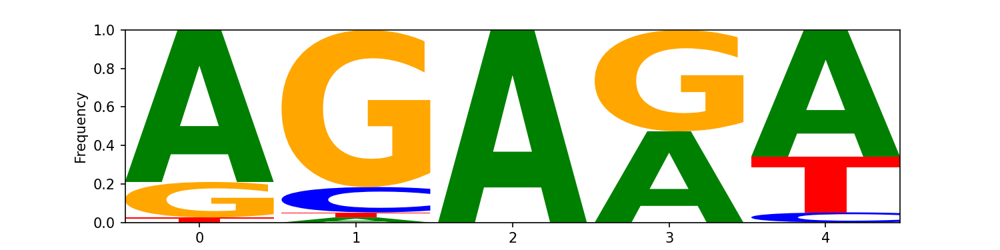Cluster 1
Cluster 2
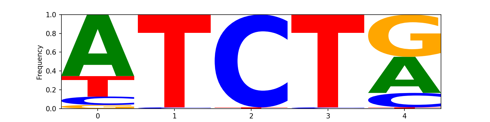Cluster 3
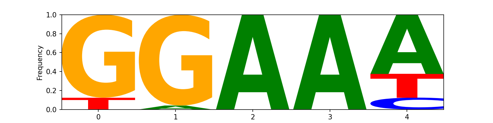Cluster 4
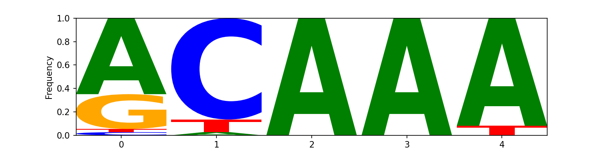Cluster 5
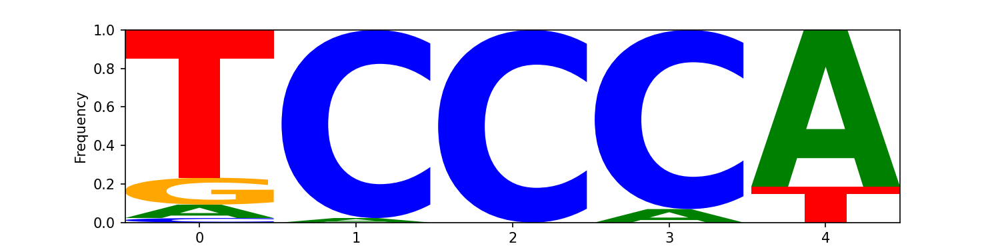Cluster 6
Cluster 7
Cluster 8
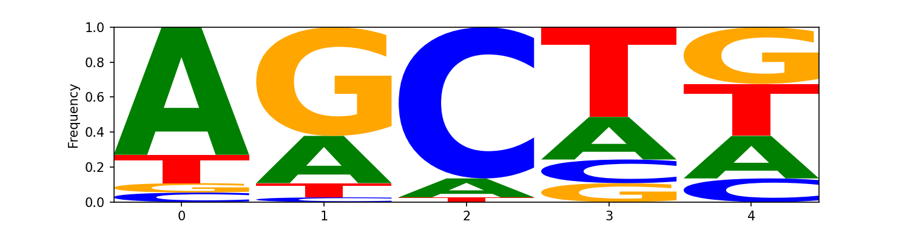Cluster 9
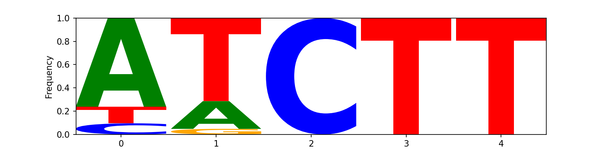Kernel_9
Cluster 0
Cluster 1
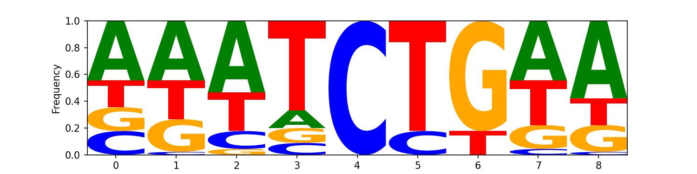Cluster 2
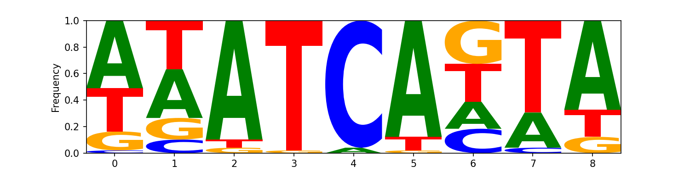Cluster 3
Cluster 4
Cluster 5
Cluster 6
Cluster 7
Cluster 8
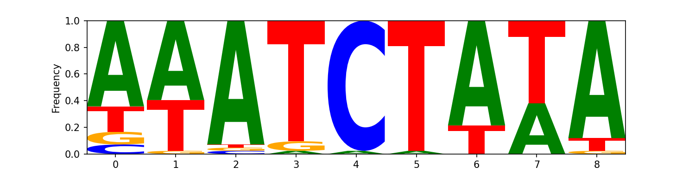Cluster 9
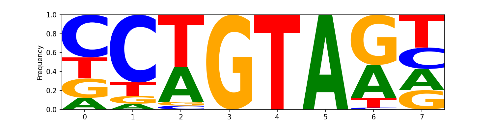Conclusions
In summary, our Random Forest approach often provides robust performance on classification tasks, while the CNN-based regressor shows promising results in predicting continuous methylation scores. Integrated Gradients analysis provides insights into which nucleotide positions the model relies on, guiding potential feature engineering and improvements. Motif discovery (both general and kernel-specific) highlights enriched sequence patterns that may be biologically relevant. Further exploration and validation of these motifs could uncover important regulatory mechanisms.